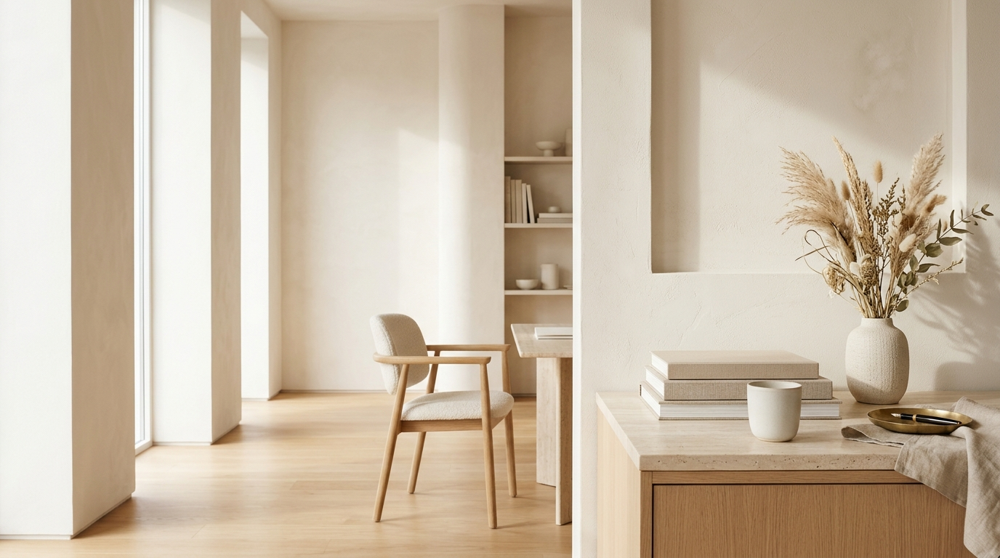

Direito Civil e Contratos
Elaboração e revisão de contratos, responsabilidade civil, cobranças e indenizações.
Uma advocacia próxima e humana, que escuta antes de agir e traduz o Direito para a sua realidade.
Acreditamos que ninguém deveria enfrentar uma questão jurídica sozinho ou sem entender o que está acontecendo.
O Quintino Fernandes Advocacia une técnica e sensibilidade para orientar pessoas e empresas com transparência. Aqui, você conversa diretamente com quem vai cuidar do seu caso.

Orientação preventiva e atuação judicial em diferentes áreas do Direito, sempre com linguagem acessível.
Elaboração e revisão de contratos, responsabilidade civil, cobranças e indenizações.
Divórcio, guarda, pensão, inventário, testamento e planejamento sucessório.
Assessoria a empregados e empregadores, reclamações e acordos trabalhistas.
Aposentadorias, revisões, benefícios por incapacidade e BPC/LOAS.
Defesa contra cobranças indevidas, negativação, planos de saúde e bancos.
Constituição de empresas, contratos societários e consultoria preventiva.
Advogado · OAB/SP 354.753
Atuação dedicada e próxima de cada cliente, com análise técnica criteriosa e comunicação clara em todas as etapas do caso.
Advogada · OAB/SP 495.979
Atuação dedicada e próxima de cada cliente, com análise técnica criteriosa e comunicação clara em todas as etapas do caso.
Você nos conta a sua situação por WhatsApp, telefone ou formulário.
Estudamos os documentos e os fatos com atenção e sigilo absoluto.
Apresentamos os caminhos possíveis, riscos e próximos passos, sem juridiquês.
Você é informado sobre cada movimentação até a conclusão do caso.
“Advocacia é, antes de tudo, escuta. É entender a pessoa por trás de cada processo.”